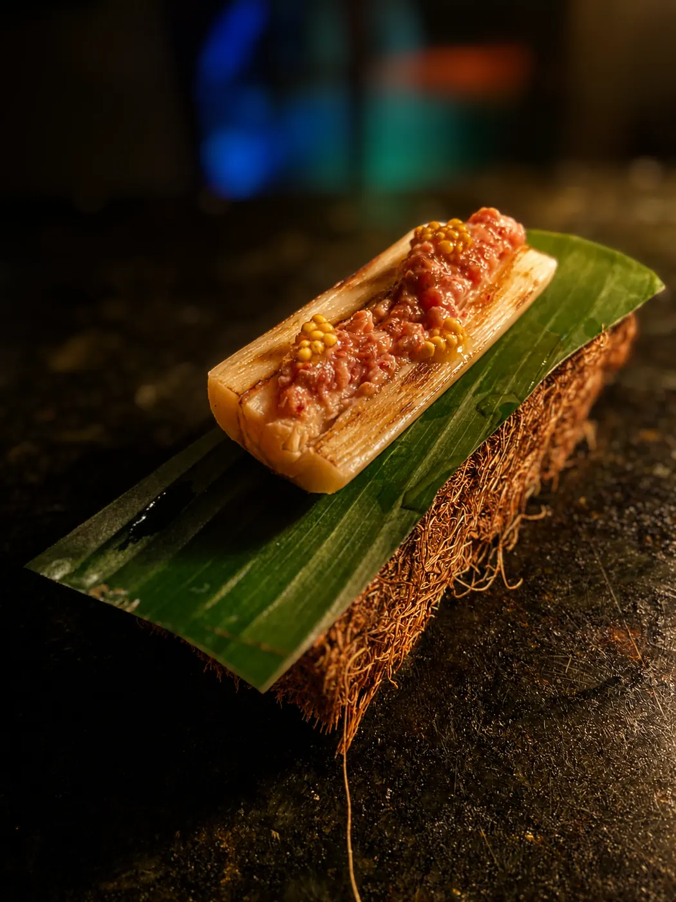
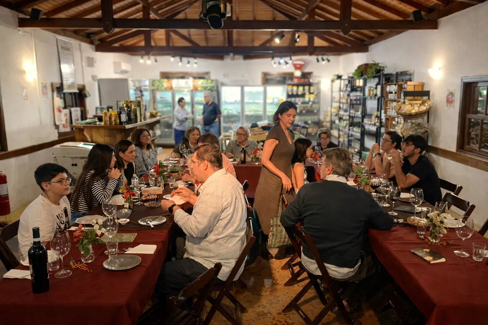
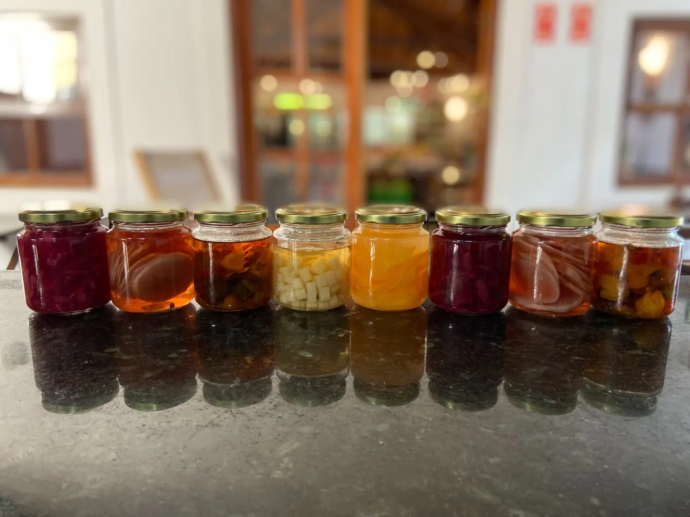
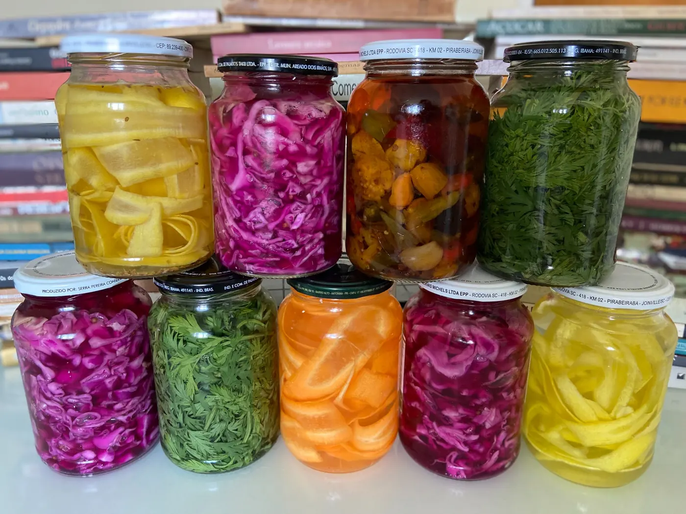
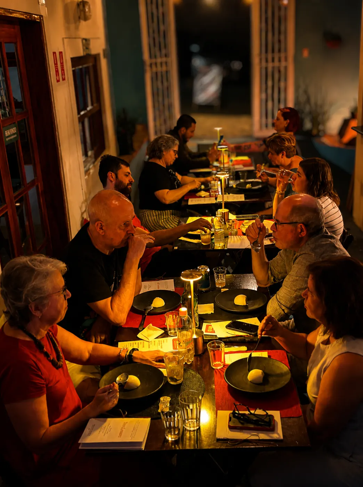
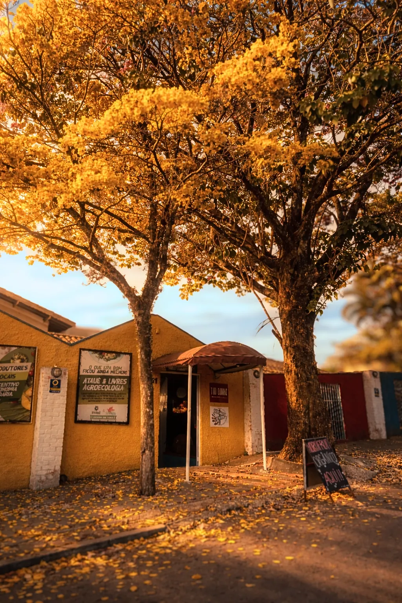

Cozinha caipira
contemporânea.
Memória, técnica e tempo.
Do interior para a cidade, cozinhamos a partir daqui: ingredientes brasileiros, repertório caipira e uma cozinha autoral que conversa com o mundo.

Menu degustação
Harmonizado com literatura
Textos e pratos são colocados em relação para criar um percurso de leitura e sabor. Cada pessoa recebe um livreto com os trechos selecionados e acompanha o jantar como quem percorre uma obra.

PF do dia e cardápio da estação
Comida de verdade para o cotidiano, com a mesma atenção aos ingredientes e ao tempo.
Ver cardápio
Uma mesa para chamar de sua
Aniversários, encontros e jantares particulares pensados para cada ocasião.
Pense seu evento
Tempo, terra e invenção
Fermentar, conservar, aproveitar e cozinhar respeitando o ritmo das coisas.
Conheça
A leitura também passa pela boca
Menus criados a partir de obras, autores, imagens e atmosferas literárias.
Saiba maisPFs que passam pela nossa mesa
O PF do dia muda. É justamente por isso que ele merece aparecer: registra a cozinha em movimento e a relação diária com ingredientes, desejos e repertórios diferentes.


Nascido no interior.
Feito para receber.
Tio Dinho era o avô do chef Thiago Basile. Nasceu no interior e partiu para São Paulo. Décadas depois, o neto fez o caminho inverso. O restaurante nasceu desse reencontro entre memória, pesquisa, técnica e hospitalidade.
Conheça nossa história
“Assim, dia após dia, buscamos o caipirismo: reavivar um passado, conversar com o presente e apontar um futuro.”
Um restaurante vivo
Pratos, processos, pessoas e encontros. A imagem do Tio Dinho também é feita do que muda todos os dias.




Cardápio, novidades e próximos encontros
Entre na comunidade da Paulistânia Desvairada e do Tio Dinho no WhatsApp.